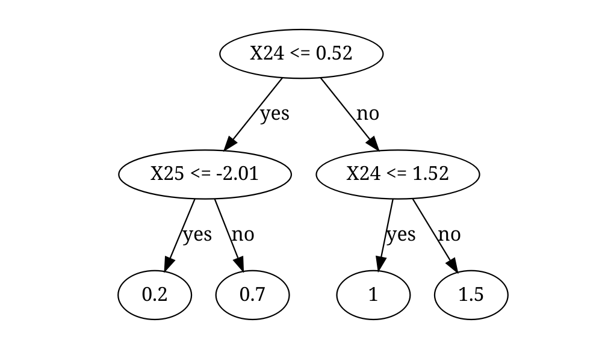

Spectrally Deconfounded Models (SDModels) is a package with methods to screen for and analyze non-linear sparse direct effects in the presence of unobserved confounding using the spectral deconfounding techniques (Ćevid, Bühlmann, and Meinshausen (2020), Guo, Ćevid, and Bühlmann (2022)). These methods have been shown to be a good estimate for the true direct effect if we observe many covariates, e.g., high-dimensional settings, and we have fairly dense confounding. Even if the assumptions are violated, it seems like there is not much to lose, and the SDModels will, in general, estimate a function closer to the true one than classical least squares optimization. SDModels provides software for Spectrally Deconfounded Additive Models (SDAMs) (Scheidegger, Guo, and Bühlmann (2025)) and Spectrally Deconfounded Random Forests (SDForest)(Ulmer, Scheidegger, and Bühlmann (2025)).

Installation
To install the SDModels R package from CRAN, just run
install.packages(SDModels)You can install the development version of SDModels from GitHub with:
# install.packages("devtools")
devtools::install_github("markusul/SDModels")or
# install.packages('pak')
pak::pkg_install('markusul/SDModels')Usage
This is a basic example on how to estimate the direct effect of on using SDForest. You can learn more about analyzing sparse direct effects estimated by SDForest in the article SDForest.
library(SDModels)
set.seed(42)
# simulation of confounded data
sim_data <- simulate_data_nonlinear(q = 2, p = 50, n = 100, m = 2)
X <- sim_data$X
Y <- sim_data$Y
train_data <- data.frame(X, Y)
# parents
sim_data$j
#> [1] 25 24
fit <- SDForest(Y ~ ., train_data)
fit
#> SDForest result
#>
#> Number of trees: 100
#> Number of covariates: 50
#> OOB loss: 0.1556413
#> OOB spectral loss: 0.05254942You can also estimate just one Spectrally Deconfounded Regression Tree using the SDTree function. See also the article SDTree.
Tree <- SDTree(Y ~ ., train_data, cp = 0.03)
# plot the tree
Tree
#> $predictions
#> [1] 0.6609876 0.6609876 0.6609876 1.0367566 0.6609876 0.6609876 0.6609876
#> [8] 0.1522660 0.6609876 0.6609876 0.6609876 0.6609876 1.0367566 1.4551242
#> [15] 1.4551242 0.6609876 0.6609876 1.4551242 1.0367566 0.6609876 0.1522660
#> [22] 0.6609876 1.0367566 0.6609876 1.0367566 1.0367566 0.6609876 0.6609876
#> [29] 0.1522660 1.4551242 0.1522660 1.4551242 1.4551242 1.0367566 1.4551242
#> [36] 0.6609876 0.6609876 1.4551242 1.0367566 0.6609876 1.4551242 1.0367566
#> [43] 1.0367566 0.6609876 1.0367566 0.6609876 0.6609876 1.4551242 0.1522660
#> [50] 0.6609876 0.6609876 0.6609876 1.0367566 0.6609876 1.4551242 0.6609876
#> [57] 1.0367566 0.6609876 0.6609876 0.1522660 1.0367566 0.6609876 1.0367566
#> [64] 0.1522660 0.6609876 0.6609876 1.4551242 0.6609876 0.6609876 1.4551242
#> [71] 1.4551242 0.6609876 0.6609876 1.0367566 0.6609876 1.4551242 0.6609876
#> [78] 0.6609876 0.6609876 1.0367566 0.6609876 0.6609876 1.4551242 0.6609876
#> [85] 0.6609876 0.6609876 0.6609876 0.6609876 0.6609876 0.1522660 0.6609876
#> [92] 1.0367566 1.4551242 1.4551242 0.6609876 0.6609876 0.1522660 0.6609876
#> [99] 1.0367566 0.6609876
#>
#> $tree
#> name left right j s value dloss res_dloss cp
#> [1,] 1 2 3 24 0.5186858 0.8295434 0.09719892 0.03323101 10.0000000
#> [2,] 1 4 5 25 -2.0062213 0.6418912 0.03323101 0.01140406 0.3418866
#> [3,] 2 6 7 24 1.5229617 1.1821439 0.03323101 0.01261921 0.3418866
#> [4,] 1 0 0 0 0.0000000 0.1522660 0.01140406 0.00000000 0.1173270
#> [5,] 3 0 0 0 0.0000000 0.6609876 0.01140406 0.00000000 0.1173270
#> [6,] 2 0 0 0 0.0000000 1.0367566 0.01261921 0.00000000 0.1298287
#> [7,] 4 0 0 0 0.0000000 1.4551242 0.01261921 0.00000000 0.1298287
#> n_samples leaf
#> [1,] 100 2
#> [2,] 63 2
#> [3,] 37 2
#> [4,] 9 1
#> [5,] 54 1
#> [6,] 19 1
#> [7,] 18 1
#>
#> $var_names
#> [1] "X1" "X2" "X3" "X4" "X5" "X6" "X7" "X8" "X9" "X10" "X11" "X12"
#> [13] "X13" "X14" "X15" "X16" "X17" "X18" "X19" "X20" "X21" "X22" "X23" "X24"
#> [25] "X25" "X26" "X27" "X28" "X29" "X30" "X31" "X32" "X33" "X34" "X35" "X36"
#> [37] "X37" "X38" "X39" "X40" "X41" "X42" "X43" "X44" "X45" "X46" "X47" "X48"
#> [49] "X49" "X50"
#>
#> $var_importance
#> X1 X2 X3 X4 X5 X6 X7
#> 0.00000000 0.00000000 0.00000000 0.00000000 0.00000000 0.00000000 0.00000000
#> X8 X9 X10 X11 X12 X13 X14
#> 0.00000000 0.00000000 0.00000000 0.00000000 0.00000000 0.00000000 0.00000000
#> X15 X16 X17 X18 X19 X20 X21
#> 0.00000000 0.00000000 0.00000000 0.00000000 0.00000000 0.00000000 0.00000000
#> X22 X23 X24 X25 X26 X27 X28
#> 0.00000000 0.00000000 0.04585022 0.01140406 0.00000000 0.00000000 0.00000000
#> X29 X30 X31 X32 X33 X34 X35
#> 0.00000000 0.00000000 0.00000000 0.00000000 0.00000000 0.00000000 0.00000000
#> X36 X37 X38 X39 X40 X41 X42
#> 0.00000000 0.00000000 0.00000000 0.00000000 0.00000000 0.00000000 0.00000000
#> X43 X44 X45 X46 X47 X48 X49
#> 0.00000000 0.00000000 0.00000000 0.00000000 0.00000000 0.00000000 0.00000000
#> X50
#> 0.00000000
#>
#> attr(,"class")
#> [1] "SDTree"
plot(Tree)
Or you can estimate a Spectrally Deconfounded Additive Model, with theoretical guarantees, using the SDAM function. See also the article SDAM.
model <- SDAM(Y ~ ., train_data)
#> [1] "Initial cross-validation"
#> [1] "Second stage cross-validation"
model
#> SDAM result
#>
#> Number of covariates: 50
#> Number of active covariates: 4